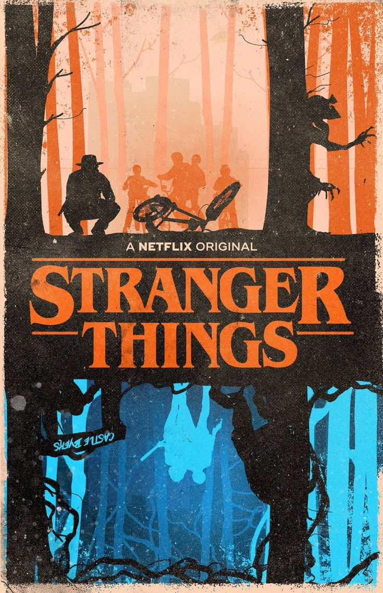

Stranger Things es una serie de telxevisión estadounidense creada por los hermanos Duffer para Netflix, que combina ciencia ficción, horror y drama. Ambientada en los años 80, sigue a un grupo de niños que descubren misterios relacionados con experimentos secretos del gobierno, fuerzas sobrenaturales y una dimensión alternativa llamada El País de las Sombras. La trama gira en torno a la desaparición de un niño, lo que lleva a los amigos a enfrentar peligros oscuros mientras intentan salvar a sus seres queridos. La serie ha ganado popularidad por su homenaje al cine y la cultura de la década de 1980, así como por sus personajes carismáticos y giros narrativos intensos.
